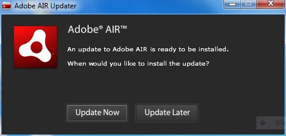
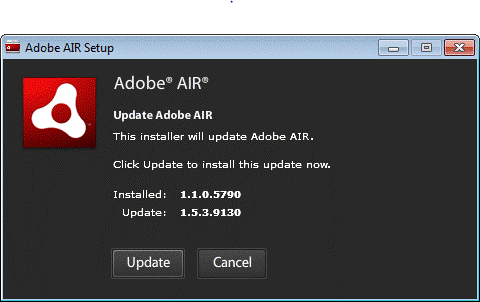
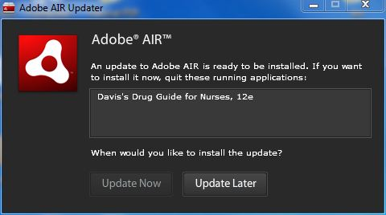

Additional Information Concerning Adobe AIR
Adobe AIR 1.0 auto-update capability
Q: I just received a dialog box notifying me that a new version of Adobe AIR is available. What does this mean?
A: Periodically, Adobe updates Adobe AIR with new features or fixes to minor problems. The Automatic Notification and Update feature allows Adobe to automatically notify you when an updated version of Adobe AIR is available so that you can install it right away.
Updates to Adobe AIR ensure that Adobe AIR works properly and may contain important changes to security. Adobe recommends that you update to the latest version of Adobe AIR whenever a new version is available, especially when a security update is mentioned. Although you may choose whether to receive automatic notification of updates, Adobe is not responsible for errors or security problems that occur because the version of Adobe AIR on your computer is not the most current one available.
Some of the possible screens you may see are below:



Q: How does the Adobe AIR auto-update functionality work?
A: By default, when an AIR application is launched, the AIR runtime checks if an update is available. It performs this check if it has been more than 2 weeks since the last update check. If an update is available, AIR will download the runtime update in the background.
After the runtime update is successfully downloaded it will prompt the end user to install the update "now" or "later."
Q: Is it possible to disable Adobe AIR auto-updates?
A: If you would like to disable the auto-update capability in Adobe AIR and only manually update the runtime when a new version is available, then you can use the SettingsManager application to disable automatic updates. Download and run the AIR SettingsManager application and use the toggle button to Enable or Disable auto-updates as desired.